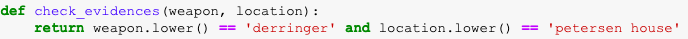

היי, אני מנסה לענות על התרגיל ולהשתמש פעמיים בunpack.
כאשר השתמשתי בunpack פעם אחת הכל עבד נהדר אבל שניסיתי לייצר פתרון נוסף, נתקלתי בשגיאה מאוד מטרידה שגורמת לי להרגיש שלא הבנתי כמו שצריך את המבנה של מילונים וtuples.
האם אוכל להציג בפני אחד המדריכים את הפתרון והשגיאה שקופצת לי ולקבל הדרכה?
תודה!
אפשר להציג פה את השגיאה ולקבל הדרכה 
זו השגיאה:
אני מבין מה היא אומרת אני פשוט לא מבין מדוע היא מתקבלת.
לכן חשבתי שיהיה זה יותר מועיל להראות את הקטע קוד עצמו 
רשום שאתה מזמן את הפונקציה עם 4 פרפמטרים (בסוגריים) במקום 2 כפי שמוגדר בשורה של
הגדרת הפונקציה (איפה שה def)
כן זה ברור לי.
השאלה למה פייתון מזמנת 4 פרמטרים. בכל בדיקה אפשרית שביצעתי אני מזמן 2 פרמטרים ולא 4.
יש כאן משהו שאני לא מבין.
אולי יש שם unpacking בתוך הזימון לפונקציה ?
בהחלט!
מה שנכנס אל הפונקציה (evidence) הוא
ולכן חשבתי שהכוכבית תסייע לפרק ל2 איברים שונים ותפעל עליהם.
תרשום פה רגע את השורת הגדרה של הפונקציה איפה שיש def
הפונקציה היא אותה פונקצייה שניתנה על ידי סגל הקורס באותו התרגיל

בגדול אמור לעבוד, שאתה מדפיס את evidence שורה לפני התנאי זה מה שמופיע לך הtuple ?
כאשר אני מריץ את הלולאה הבאה
כאשר current_suspects הוא המילון הראשון ברשימה שהתקבלה בתרגיל:
הy (שהוא הevidence מהצילום הקודם) שמתקבלים הם בהתחלה עבור האיבור הראשון במילון הראשון ולאחר מכן עבור האיבר השני במילון הראשון:
באופן מאוד מוזר, אם אני לא מגדיר לפונקציה לקבל check_evidence שהיא מקבלת 4 פרמטרים, היא לא תרוץ מעבר לאיבר הראשון במילון הראשון.
כדי להבין איזה 4 פרמטרים היא מקבלת (אחרי שקיבלתי את השגיאה) נתתי לפונקציה check_evidence לקבל 4 פרמטרים ואז היא כן רצה מספיק זמן כדי להדפיס לי את האיבר השני במילון הראשון.
לייק 1
אתה לא ענית אבל על מש ששאלתי:
תעשה print(evidence) לפני השורה של התנאי ותגיד לי מה יצא לך
evidence זה הy במה ששלחתי.
פשוט בדקתי את זה כל כך הרבה פעמים בחלון נפרד שגם שיניתי את שם המשתנה.
לכן להבנתי, מה ששלחתי קודם זה מה שביקשת וזה מתייחס לשורות ממש לפני התנאי
לייק 1
אבל אם y שלך הוא המידע אז למה אתה מזמן את evidence ולא את y לתוך הפונקציה ?
אתה שואל שאלה טובה ואני אשם בבלבול
בפעם הראשונה צילמתי צילום מסך פשוט של הפונקציה שעבדה לי עם unpacking אחד.
לאחר מכן, כבר עברתי לשלוח צילומי מסך של הפונקציה שלא עבדה, שם המשתנה evidence הוא למעשה המשתנה y.
לכן, בשלב מסויים בדיון המשתנה התחלף, אבל אני מזמן את המשתנה הנכון אל תוך הפונקציה.
מצטער על הבלבול
שלח לי את הקוד בפרטי
אוקי הבעיה היא בunpaking של הfor
נסה לבדוק מה אתה מקבל שם.
מה הכוונה?
זה מה שעשיתי בprint של x וy לא?
שאתה עושה items() אתה מפרק את הערכי key של המילון ולא את הvlaue.
ואז אתה מנסה להכניס את זה לפונקציה עם * אז הוא לוקח את הkey שהוא מחרוזת ומפרק אותו לתווים
ומנסה להכניס אותו לפונקציה.
הבנתי!
המון תודה על העזרה. אני אנסה לחשוב על דרך אחרת לבצע את הunpacking הזה.